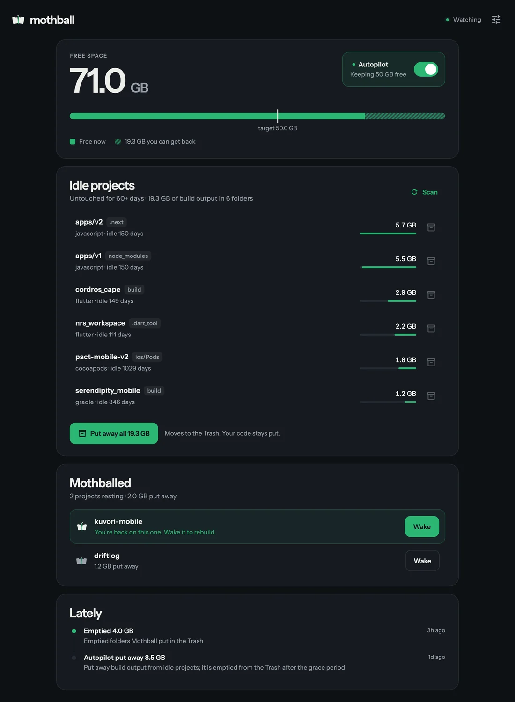
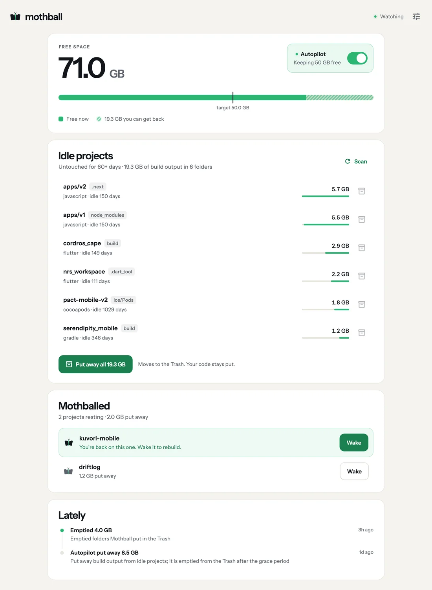

v0.1.3 · free · open source · Mac, Windows, Linux
Your disk is full of projects you forgot.
Mothball finds the build output in projects you have not touched in months, puts it away, and rebuilds it the day you come back. Your code stays exactly where it is.
The first run, on the Mac Mothball was built on
180 folders
56.5 GB back


22
stacks it understands, from JavaScript and Flutter to Rust, Unity and Terraform.
0
files deleted outright. Everything goes to the Trash first, and your code is never touched.
3
systems, natively: macOS, Windows and Linux, on Intel, AMD and Arm.
How it works
It sits in your menu bar and keeps the shelf tidy.
1. Finds idle projects
It reads each project's own files to know its stack, then measures the build output that can be regenerated. Projects you touched recently are left alone.
2. Puts them away
One click, or let Autopilot do it whenever free space drops below your target. The longest idle projects go first.
3. Wakes them up
Open an old project again and Mothball notices. Wake runs the right restore step for its stack: npm install, flutter pub get, pod install.
All of this is safe to put away.
Every folder here can be rebuilt with one command. Mothball only takes it when the project around it proves what it is.
22 stacks, plus tool caches in green. Missing yours? It's one file.
Safe by design
Careful enough to leave running.
A cleaner you are scared of is a cleaner you never use. Mothball would rather skip a folder than guess.
- Never touches anything git tracks. If it is committed, it is yours.
- Never matches by folder name alone. A folder called build is only build output when the project around it says so.
- Uncommitted work means active. Projects with changes in progress are skipped.
- Checks again right before moving. If anything changed since the scan, it backs off.
- Trash, never delete. Every move is logged, and .mothballignore keeps anything you choose.
Prefer the terminal?
The whole thing is a CLI too.
Same engine, same safety checks, on macOS, Windows and Linux.
Download
Get Mothball for your computer
Free and open source, for macOS, Windows and Linux.
Or with Homebrew
$ brew tap herocodess/tap $ brew trust herocodess/tap $ brew install --cask mothball
The app includes the mothball command line tool. All files and checksums
Your old projects can rest. Your disk can breathe.
Free and open source under the MIT licence.